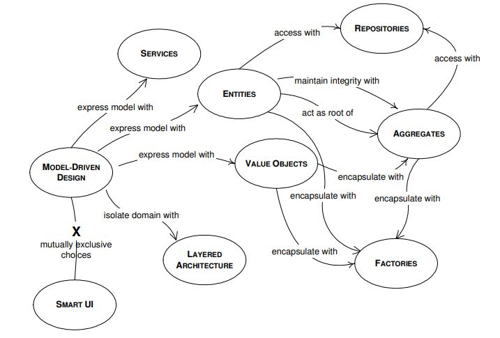
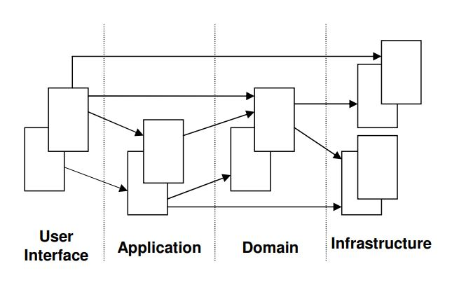
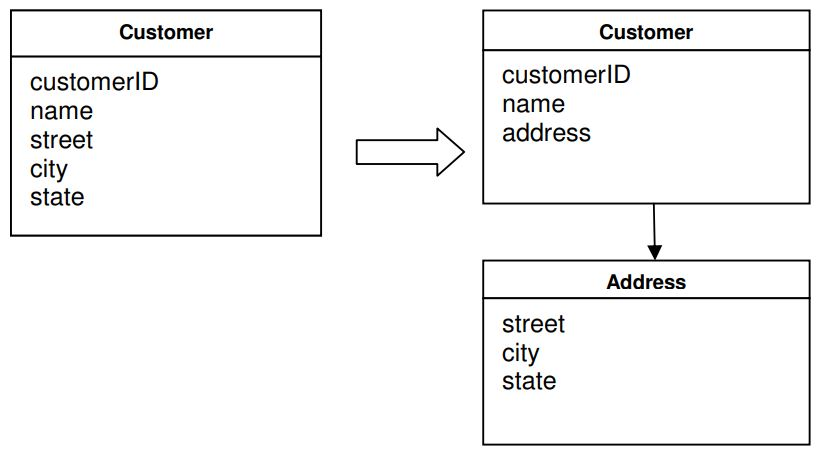

MODEL-DRIVEN DESIGN
Os capítulos anteriores ressaltaram a importância de uma abordagem de desenvolvimento de software centrada no domínio de negócios. Dissemos que é fundamentalmente importante criar um modelo que esteja profundamente enraizado no domínio, e deve refletir os conceitos essenciais do domínio com grande precisão. A Linguagem Ubíqua deve ser totalmente exercitada durante todo o processo de modelagem, a fim de facilitar a comunicação entre os especialistas em software e os especialistas de domínio, e descobrir os principais conceitos de domínio que devem ser usados no modelo. O objetivo deste processo de modelagem é criar um bom modelo. A próxima etapa é implementar o modelo no código. Esta é uma fase igualmente importante do processo de desenvolvimento de software. Ter criado um ótimo modelo, mas não transferi-lo adequadamente para o código, acabará em um software de qualidade questionável.
Acontece que os analistas de software trabalham com especialistas do domínio de negócios por meses, descobrem os elementos fundamentais do domínio, enfatizam as relações entre eles e criam um modelo correto, que captura com precisão o domínio. Em seguida, o modelo é passado para os desenvolvedores de software. Os desenvolvedores podem examinar o modelo e descobrir que alguns dos conceitos ou relacionamentos encontrados nele não podem ser expressos adequadamente em código. Então eles usam o modelo como a fonte original de inspiração, mas eles criam seu próprio design que pega emprestado algumas das ideias do modelo e adiciona algumas ideias próprias. O processo de desenvolvimento continua e mais classes são adicionadas ao código, expandindo a divisão entre o modelo original e a implementação final. O bom resultado final não é garantido. Bons desenvolvedores podem criar um produto que funcione, mas ele resistirá às provações do tempo? Será facilmente extensível? Será de fácil manutenção?
Qualquer domínio pode ser expresso com muitos modelos, e qualquer modelo pode ser expresso de várias maneiras no código. Para cada problema específico pode haver mais de uma solução. Qual escolhemos? Ter um modelo analiticamente correto não significa que o modelo possa ser expresso diretamente em código. Ou talvez sua implementação quebre alguns princípios de design de software, o que não é aconselhável. É importante escolher um modelo que possa ser colocado em código com facilidade e precisão. A questão básica aqui é: como abordamos a transição do modelo para o código?
Uma das técnicas de projeto recomendadas é o chamado modelo de análise, que é visto como separado do projeto de código e geralmente é feito por pessoas diferentes. O modelo de análise é o resultado da análise do domínio do negócio, resultando em um modelo que não leva em consideração o software utilizado para implementação. Tal modelo é usado para entender o domínio. Um certo nível de conhecimento é construído, e o modelo resultante pode ser analiticamente correto. O software não é levado em consideração nesta fase porque é considerado um fator de confusão. Este modelo chega aos desenvolvedores que devem fazer o design. Como o modelo não foi construído com princípios de design em mente, provavelmente não servirá bem a esse propósito. Os desenvolvedores terão que adaptá-lo ou criar um design separado. E não há mais um mapeamento entre o modelo e o código. O resultado é que os modelos de análise são logo abandonados após o início da codificação.
Um dos principais problemas com essa abordagem é que os analistas não podem prever alguns dos defeitos em seu modelo e todas as complexidades do domínio. Os analistas podem ter entrado em muitos detalhes com alguns dos componentes do modelo e não detalharam suficientemente outros. Detalhes muito importantes são descobertos durante o processo de design e implementação. Um modelo que seja verdadeiro para o domínio pode ter sérios problemas com a persistência do objeto ou comportamento de desempenho inaceitável.
Os desenvolvedores serão forçados a tomar algumas decisões por conta própria e farão alterações no design para resolver um problema real que não foi considerado quando o modelo foi criado. Eles criam um design que se distancia do modelo, tornando-o menos relevante.
Se os analistas trabalharem de forma independente, eles acabarão criando um modelo. Quando esse modelo é passado para os projetistas, parte do conhecimento dos analistas sobre o domínio e o modelo é perdido. Embora o modelo possa ser expresso em diagramas e escrita, é provável que os designers não compreendam todo o significado do modelo, ou os relacionamentos entre alguns objetos ou seu comportamento. Existem detalhes em um modelo que não são facilmente expressos em um diagrama, e podem não ser totalmente apresentados mesmo por escrito. Os desenvolvedores terão dificuldade em entendê-los. Em alguns casos, eles farão algumas suposições sobre o comportamento pretendido, e é possível que façam as erradas, resultando no funcionamento incorreto do programa.
Os analistas têm suas próprias reuniões fechadas onde muitas coisas são discutidas sobre o domínio e há muito compartilhamento de conhecimento. Eles criam um modelo que deveria conter todas essas informações de forma condensada, e os desenvolvedores têm que assimilar tudo isso lendo os documentos fornecidos a eles. Seria muito mais produtivo se os desenvolvedores pudessem participar das reuniões de analistas e assim terem uma visão clara e completa do domínio e do modelo antes de começarem a projetar o código.
Uma abordagem melhor é relacionar de perto a modelagem e o design de domínio. O modelo deve ser construído de olho no software e nas considerações de projeto. Os desenvolvedores devem ser incluídos no processo de modelagem. A ideia principal é escolher um modelo que possa ser adequadamente expresso em software, para que o processo de projeto seja direto e baseado no modelo. Relacionar firmemente o código a um modelo subjacente dá significado ao código e torna o modelo relevante.
Envolver os desenvolvedores fornece feedback. Ele garante que o modelo possa ser implementado em software. Se algo está errado, é identificado em um estágio inicial e o problema pode ser facilmente corrigido.
Aqueles que escrevem o código devem conhecer muito bem o modelo e devem se sentir responsáveis por sua integridade. Eles devem perceber que uma mudança no código implica uma mudança no modelo; caso contrário, eles irão refatorar o código até o ponto em que ele não mais expresse o modelo original. Se o analista se desvincular do processo de implementação, logo perderá a preocupação com as limitações introduzidas pelo desenvolvimento. O resultado é um modelo que não é prático.
Qualquer pessoa técnica que contribua para o modelo deve passar algum tempo tocando o código, qualquer que seja o papel principal que desempenha no projeto. Qualquer pessoa responsável por alterar o código deve aprender a expressar um modelo por meio do código. Todo desenvolvedor deve estar envolvido em algum nível de discussão sobre o modelo e ter contato com especialistas do domínio. Aqueles que contribuem de diferentes maneiras devem conscientemente engajar aqueles que tocam o código em uma troca dinâmica de ideias-modelo por meio da Linguagem Ubíqua.
Se o design, ou alguma parte central dele, não for mapeado para o modelo de domínio, esse modelo é de pouco valor e a correção do software é suspeita. Ao mesmo tempo, mapeamentos complexos entre modelos e funções de design são difíceis de entender e, na prática, impossíveis de manter à medida que o design muda. Abre-se uma divisão mortal entre análise e design, de modo que a percepção obtida em cada uma dessas atividades não se alimente à outra.
Projete uma parte do sistema de software para refletir o modelo de domínio de maneira muito literal, de modo que o mapeamento seja óbvio. Revisite o modelo e modifique-o para ser implementado de forma mais natural no software, mesmo que você procure fazê-lo refletir uma visão mais profunda do domínio. Exija um modelo único que atenda bem a ambos os propósitos, além de suportar uma Linguagem Ubíqua fluente.
Extrair do modelo a terminologia usada no projeto e a atribuição básica de responsabilidades. O código torna-se uma expressão do modelo, portanto, uma mudança no código pode ser uma mudança no modelo. Seu efeito deve se propagar pelo resto das atividades do projeto de acordo.
Amarrar firmemente a implementação a um modelo geralmente requer ferramentas de desenvolvimento de software e linguagens que suportem um paradigma de modelagem, como programação orientada a objetos.
A programação orientada a objetos é adequada para implementação de modelos porque ambas são baseadas no mesmo paradigma. A programação orientada a objetos fornece classes de objetos e associações de classes, instâncias de objetos e mensagens entre eles. As linguagens OOP possibilitam a criação de mapeamentos diretos entre objetos de modelo com seus relacionamentos e suas contrapartes de programação.
As linguagens procedurais oferecem suporte limitado para design orientado por modelo. Essas linguagens não oferecem as construções necessárias para implementar os principais componentes de um modelo. Alguns dizem que OOP pode ser feito com uma linguagem procedural como C e, de fato, algumas das funcionalidades podem ser reproduzidas dessa maneira. Os objetos podem ser simulados como estruturas de dados. Tais estruturas não contêm o comportamento do objeto, e isso deve ser adicionado separadamente como funções. O significado de tais dados existe apenas na mente do desenvolvedor, porque o código em si não é explícito. Um programa escrito em uma linguagem procedural geralmente é percebido como um conjunto de funções, uma chamando a outra e trabalhando juntas para alcançar um determinado resultado. Tal programa não pode facilmente encapsular conexões conceituais, tornando o mapeamento entre domínio e código difícil de ser realizado.
Alguns domínios específicos, como a matemática, podem ser facilmente modelados e implementados usando programação procedural, porque muitas teorias matemáticas são simplesmente abordadas usando chamadas de função e estruturas de dados, pois trata-se principalmente de cálculos. Domínios mais complexos não são apenas um conjunto de conceitos abstratos envolvendo computações, e não podem ser reduzidos a um conjunto de algoritmos, de modo que linguagens procedurais ficam aquém da tarefa de expressar os respectivos modelos. Por esse motivo, a programação procedural não é recomendada para projetos orientados a modelos.
Os Blocos De Construção De Um Model-Driven Design
As seções a seguir deste capítulo apresentarão os padrões mais importantes a serem usados no projeto orientado a modelos. O objetivo desses padrões é apresentar alguns dos elementos-chave da modelagem de objetos e design de software do ponto de vista do design orientado a domínio. O diagrama a seguir é um mapa dos padrões apresentados e as relações entre eles.
Arquitetura em Camadas
Quando criamos um aplicativo de software, grande parte do aplicativo não está diretamente relacionado ao domínio, mas faz parte da infraestrutura ou atende ao próprio software. É possível e ok que a parte de domínio de um aplicativo seja bem pequena em comparação com o resto, já que um aplicativo típico contém muito código relacionado ao acesso ao banco de dados, acesso a arquivos ou rede, interfaces de usuário, etc.
Em um programa orientado a objetos, a interface do usuário, o banco de dados e outros códigos de suporte geralmente são gravados diretamente nos objetos de negócios. Lógica de negócios adicional é incorporada no comportamento de widgets de interface do usuário e scripts de banco de dados. Isso às vezes acontece porque é a maneira mais fácil de fazer as coisas funcionarem rapidamente.
No entanto, quando o código relacionado ao domínio é misturado com as outras camadas, torna-se extremamente difícil ver e pensar. Alterações superficiais na interface do usuário podem realmente alterar a lógica de negócios. Alterar uma regra de negócios pode exigir rastreamento meticuloso do código da interface do usuário, código do banco de dados ou outros elementos do programa. A implementação de objetos coerentes e orientados por modelo torna-se impraticável. O teste automatizado é complicado. Com todas as tecnologias e lógicas envolvidas em cada atividade, um programa deve ser mantido muito simples ou se torna impossível de entender.
Portanto, particione um programa complexo em LAYERS. Desenvolva um design dentro de cada LAYER que seja coeso e que dependa apenas das camadas abaixo. Siga os padrões de arquitetura padrão para fornecer acoplamento flexível às camadas acima. Concentre todo o código relacionado ao modelo de domínio em uma camada e isole-o da interface do usuário, do aplicativo e do código de infraestrutura. Os objetos de domínio, livres da responsabilidade de se exibir, armazenar, gerenciar tarefas do aplicativo e assim por diante, podem ser focados em expressar o modelo de domínio. Isso permite que um modelo evolua para ser rico e claro o suficiente para capturar o conhecimento essencial do negócio e colocá-lo em prática.
Uma solução de arquitetura comum para projetos orientados por domínio contém quatro camadas conceituais:
| User Interface (Camada de Apresentação) | Responsável por apresentar informações ao usuário e interpretar comandos do usuário. |
| Application Layer | Esta é uma camada fina que coordena a atividade do aplicativo. Ele não contém lógica de negócios. Ele não retém o estado dos objetos de negócios, mas pode reter o estado do progresso de uma tarefa do aplicativo. |
| Domain Layer | Esta camada contém informações sobre o domínio. Este é o coração do software empresarial. O estado dos objetos de negócios é mantido aqui. A persistência dos objetos de negócios e possivelmente seu estado são delegados à camada de infraestrutura. |
| Infrastructure Layer | Esta camada atua como uma biblioteca de suporte para todas as outras camadas. Ele fornece comunicação entre camadas, implementa persistência para objetos de negócios, contém bibliotecas de suporte para a camada de interface do usuário, etc. |
É importante dividir uma aplicação em camadas separadas e estabelecer regras de interação entre as camadas. Se o código não estiver claramente separado em camadas, logo ficará tão emaranhado que se tornará muito difícil gerenciar as alterações. Uma simples alteração em uma seção do código pode ter resultados inesperados e indesejáveis em outras seções. A camada de domínio deve ser focada em questões de domínio principal. Não deve estar envolvido em atividades de infraestrutura. A interface do usuário não deve estar estreitamente conectada à lógica de negócios nem às tarefas que normalmente pertencem à camada de infraestrutura. Uma camada de aplicação é necessária em muitos casos. Tem que haver um gerente sobre a lógica de negócios que supervisiona e coordena a atividade geral do aplicativo.
Por exemplo, uma interação típica do aplicativo, domínio e infraestrutura pode ser assim. O usuário deseja reservar uma rota de voo e solicita que um serviço de aplicativo na camada de aplicativo o faça. A camada de aplicativo busca os objetos de domínio relevantes da infraestrutura e invoca métodos relevantes neles, por exemplo, para verificar as margens de segurança de outros voos já reservados. Uma vez que os objetos de domínio tenham feito todas as verificações e atualizado seu status para “decidido”, o serviço de aplicativo persiste os objetos na infraestrutura.
Entidades
Há uma categoria de objetos que parecem ter uma identidade, que permanece a mesma em todos os estados do software. Para esses objetos não são os atributos que importam, mas um fio de continuidade e identidade, que abrange a vida de um sistema e pode se estender além dele. Tais objetos são chamados de Entidades, as linguagens OOP mantêm instâncias de objetos na memória e associam uma referência ou um endereço de memória para cada objeto. Essa referência é única para cada objeto em um determinado momento, mas não há garantia de que permanecerá assim por um período de tempo indefinido. Na verdade o contrário é verdade. Os objetos são constantemente movidos para fora e de volta à memória, são serializados e enviados pela rede e recriados na outra extremidade, ou são destruídos. Essa referência, que serve de identidade para o ambiente de execução do programa, não é a identidade da qual estamos falando. Se houver uma classe que contenha informações meteorológicas, como temperatura, é bem possível que haja duas instâncias distintas da respectiva classe, ambas contendo o mesmo valor. Os objetos são perfeitamente iguais e intercambiáveis entre si, mas possuem referências diferentes. Não são entidades.
Se fôssemos implementar o conceito de Pessoa usando um programa de software, provavelmente criaríamos uma classe Pessoa com uma série de atributos: nome, data de nascimento, local de nascimento, etc. Algum desses atributos é a identidade da pessoa? ? O nome não pode ser a identidade porque pode haver mais pessoas com o mesmo nome. Não poderíamos distinguir entre pessoas com o mesmo nome, se tivéssemos em conta apenas o seu nome. Também não podemos usar data de nascimento, porque muitas pessoas nascem no mesmo dia. O mesmo se aplica ao local de nascimento. Um objeto deve ser diferenciado de outros objetos, mesmo que possam ter os mesmos atributos. A identidade errada pode levar à corrupção de dados.
Considere um sistema de contabilidade bancária. Cada conta tem seu próprio número. Uma conta pode ser identificada com precisão pelo seu número. Esse número permanece inalterado durante toda a vida útil do sistema e garante a continuidade. O número da conta pode existir como um objeto na memória ou pode ser destruído na memória e enviado ao banco de dados. Ele também pode ser arquivado quando a conta é fechada, mas ainda existe em algum lugar, desde que haja algum interesse em mantê-lo por perto. Não importa que representação seja necessária, o número permanece o mesmo.
Portanto, implementar entidades em software significa criar identidade. Para uma pessoa pode ser uma combinação de atributos: nome, data de nascimento, local de nascimento, nome dos pais, endereço atual. O número do Seguro Social também é usado nos EUA para criar identidade. Para uma conta bancária o número da conta parece ser suficiente para sua identidade. Normalmente a identidade é um atributo do objeto, uma combinação de atributos, um atributo criado especialmente para preservar e expressar a identidade, ou mesmo um comportamento. É importante que dois objetos com identidades diferentes sejam facilmente distinguidos pelo sistema, e dois objetos com a mesma identidade sejam considerados iguais pelo sistema. Se essa condição não for atendida, todo o sistema pode ser corrompido.
Existem diferentes maneiras de criar uma identidade única para cada objeto. O ID pode ser gerado automaticamente por um módulo e usado internamente no software sem torná-lo visível para o usuário. Pode ser uma chave primária em uma tabela de banco de dados, que tem a garantia de ser exclusiva no banco de dados. Sempre que o objeto é recuperado do banco de dados, seu ID é recuperado e recriado na memória. O ID pode ser criado pelo usuário como acontece com os códigos associados aos aeroportos. Cada aeroporto tem um identificador de string exclusivo que é reconhecido internacionalmente e usado pelas agências de viagens em todo o mundo para identificar aeroportos em seus horários de viagem. Outra solução é usar os atributos do objeto para criar o ID, e quando isso não for suficiente, outro atributo pode ser adicionado para ajudar a identificar o respectivo objeto.
Quando um objeto é distinguido por sua identidade, em vez de seus atributos, torne isso primário em sua definição no modelo. Mantenha a definição de classe simples e focada na continuidade e identidade do ciclo de vida. Defina um meio de distinguir cada objeto, independentemente de sua forma ou história. Esteja alerta para os requisitos que exigem objetos correspondentes por atributos. Defina uma operação que garanta a produção de um resultado exclusivo para cada objeto, possivelmente anexando um símbolo com garantia de exclusividade. Este meio de identificação pode vir de fora, ou pode ser um identificador arbitrário criado por e para o sistema, mas deve corresponder às distinções de identidade no modelo. O modelo deve definir o que significa ser a mesma coisa.
As entidades são objetos importantes de um modelo de domínio e devem ser consideradas desde o início do processo de modelagem. Também é importante determinar se um objeto precisa ser uma entidade ou não, o que é discutido no próximo padrão.
Value Objects
Discutimos entidades e a importância de reconhecer entidades no início da fase de modelagem. Entidades são objetos necessários em um modelo de domínio. Devemos tornar todos os objetos entidades? Todo objeto deve ter uma identidade?
Podemos ser tentados a transformar todos os objetos em entidades. As entidades podem ser rastreadas. Mas o rastreamento e a criação de identidade têm um custo. Precisamos garantir que cada instância tenha sua identidade exclusiva, e rastrear a identidade não é muito simples. É preciso muita reflexão para decidir o que faz uma identidade, porque uma decisão errada levaria a objetos com a mesma identidade, algo que não é desejado. Há também implicações de desempenho em fazer com que todos os objetos sejam entidades. Tem que haver uma instância para cada objeto. Se Cliente for um objeto de entidade, uma instância desse objeto, representando um cliente de banco específico, não poderá ser reutilizada para operações de conta correspondentes a outros clientes. O resultado é que tal instância deve ser criada para cada cliente. Isso pode resultar na degradação do desempenho do sistema ao lidar com milhares de instâncias.
Vamos considerar um aplicativo de desenho. O usuário é apresentado a uma tela e ele pode desenhar quaisquer pontos e linhas de qualquer espessura, estilo e cor. É útil criar uma classe de objeto chamada Point, e o programa pode criar uma instância dessa classe para cada ponto na tela. Tal ponto conteria dois atributos associados a coordenadas de canvas ou tela. É necessário considerar cada ponto como tendo uma identidade? Ela tem continuidade? Parece que a única coisa que importa para tal objeto são suas coordenadas.
Há casos em que precisamos conter alguns atributos de um elemento de domínio. Não estamos interessados em qual objeto ele é, mas em quais atributos ele possui. Um objeto que é usado para descrever certos aspectos de um domínio, e que não tem identidade, é chamado de Objeto de Valor.
É necessário distinguir entre Objetos de Entidade e Objetos de Valor. Não é útil fazer todas as entidades de objeto por causa da uniformidade. Na verdade, é recomendado selecionar como entidades apenas os objetos que estão de acordo com a definição da entidade. E faça com que o resto dos objetos sejam Value Objects. (Apresentaremos outro tipo de objeto na próxima seção, mas assumiremos que temos apenas objetos de entidade e objetos de valor por enquanto.) Isso simplificará o design e haverá algumas outras consequências positivas.
Sem identidade, os objetos de valor podem ser facilmente criados e descartados. Ninguém se preocupa em criar uma identidade, e o coletor de lixo cuida do objeto quando não é mais referenciado por nenhum outro objeto. Isso simplifica muito o design.
É altamente recomendável que os objetos de valor sejam imutáveis. Eles são criados com um construtor e nunca modificados durante sua vida útil. Quando você deseja um valor diferente para o objeto, basta criar outro. Isso tem consequências importantes para o design. Sendo imutáveis e sem identidade, os Objetos de Valor podem ser compartilhados. Isso pode ser imperativo para alguns projetos. Objetos imutáveis são compartilháveis com importantes implicações de desempenho. Eles também manifestam integridade, ou seja, integridade de dados. Imagine o que significaria compartilhar um objeto que não é imutável. Um sistema de reservas de viagens aéreas poderia criar objetos para cada voo. Um dos atributos pode ser o código de voo. Um cliente reserva um voo para um determinado destino. Outro cliente quer reservar o mesmo voo. O sistema opta por reutilizar o objeto que contém o código de voo, pois trata-se do mesmo voo. Entretanto, o cliente muda de ideias e opta por um voo diferente. O sistema altera o código de voo porque este não é imutável. O resultado é que o código de voo do primeiro cliente também muda.
Uma regra de ouro é: se os objetos de valor forem compartilháveis, eles devem ser imutáveis. Objetos de valor devem ser mantidos finos e simples. Quando um objeto de valor é necessário por outra parte, ele pode ser simplesmente passado por valor, ou uma cópia dele pode ser criada e fornecida. Fazer uma cópia de um Value Object é simples e geralmente sem consequências. Se não houver identidade, você pode fazer quantas cópias desejar e destruir todas quando necessário.
Os Objetos de Valor podem conter outros Objetos de Valor e podem até conter referências a Entidades. Embora os objetos de valor sejam usados para simplesmente conter atributos de um objeto de domínio, isso não significa que ele deva conter uma longa lista com todos os atributos. Os atributos podem ser agrupados em diferentes objetos. Os atributos escolhidos para compor um objeto de valor devem formar um todo conceitual. Um cliente está associado a um nome, uma rua, uma cidade e um estado. É melhor conter as informações de endereço em um objeto separado, e o objeto cliente conterá uma referência a tal objeto. Rua, cidade, estado devem ter um objeto próprio, o Endereço, pois eles pertencem conceitualmente um ao outro, ao invés de serem atributos separados do cliente, como mostra o diagrama abaixo.
Services
Quando analisamos o domínio e tentamos definir os principais objetos que compõem o modelo, descobrimos que alguns aspectos do domínio não são facilmente mapeados para objetos. Os objetos são geralmente considerados como tendo atributos, um estado interno que é gerenciado pelo objeto e exibem um comportamento. Quando desenvolvemos a linguagem ubíqua, os conceitos-chave do domínio são introduzidos na linguagem e os substantivos da linguagem são facilmente mapeados para objetos. Os verbos da língua, associados aos seus substantivos correspondentes, tornam-se parte do comportamento desses objetos. Mas há algumas ações no domínio, alguns verbos, que parecem não pertencer a nenhum objeto. Eles representam um importante comportamento do domínio, portanto, não podem ser negligenciados ou simplesmente incorporados em algumas das Entidades ou Objetos de Valor. Adicionar tal comportamento a um objeto estragaria o objeto, fazendo-o representar uma funcionalidade que não lhe pertence. No entanto, usando uma linguagem orientada a objetos, temos que usar um objeto para essa finalidade. Não podemos ter uma função separada por conta própria. Tem que ser anexado a algum objeto. Muitas vezes, esse tipo de comportamento funciona em vários objetos, talvez de diferentes classes. Por exemplo, para transferir dinheiro de uma conta para outra; essa função deve estar na conta de envio ou na conta de recebimento? Parece tão deslocado em qualquer um.
Quando tal comportamento é reconhecido no domínio, a melhor prática é declará-lo como um Serviço. Esse objeto não possui um estado interno e seu objetivo é simplesmente fornecer funcionalidade para o domínio. A assistência fornecida por um Serviço pode ser significativa, e um Serviço pode agrupar funcionalidades relacionadas que atendem às Entidades e aos Objetos de Valor. É muito melhor declarar o Serviço explicitamente, pois cria uma distinção clara no domínio, encapsula um conceito. Cria confusão para incorporar tal funcionalidade em uma Entidade ou Objeto de Valor porque não ficará claro o que esses objetos representam.
Um Serviço não deve substituir a operação que normalmente pertence a objetos de domínio. Não
devemos criar um Serviço para toda operação necessária. Mas quando tal operação se destaca como
um conceito importante no domínio, deve ser criado um Serviço para ela. Existem três
características de um Serviço:
- A operação realizada pelo Serviço refere-se a um conceito de domínio que não pertence naturalmente a uma Entidade ou Objeto de Valor;
- A operação realizada refere-se a outros objetos do domínio;
- A operação é sem estado;
Quando um processo ou transformação significativa no domínio não for uma responsabilidade natural de uma Entidade ou Objeto de Valor, adicione uma operação ao modelo como uma interface autônoma declarada como um Serviço. Defina a interface em termos da linguagem do modelo e certifique-se de que o nome da operação faça parte da Linguagem Ubíqua. Torne o serviço sem estado.
Ao usar os Serviços, é importante manter a camada de domínio isolada. É fácil ficar confuso entre os serviços que pertencem à camada de domínio e os que pertencem à infraestrutura. Também pode haver serviços na camada de aplicação que adicionam um nível suplementar de complexidade. Esses serviços são ainda mais difíceis de separar de suas contrapartes que residem na camada de domínio. Ao trabalhar no modelo e durante a fase de design, precisamos garantir que o nível de domínio permaneça isolado dos outros níveis.
Os serviços de aplicativo e de domínio geralmente são construídos sobre Entidades e Valores de domínio, fornecendo a funcionalidade necessária diretamente relacionada a esses objetos. Decidir a qual camada um serviço pertence é difícil. Se a operação realizada conceitualmente pertence à camada de aplicação, então o Serviço deve ser colocado lá. Se a operação é sobre objetos de domínio e está estritamente relacionada ao domínio, atendendo a uma necessidade de domínio, então ela deve pertencer à camada de domínio.
Vamos considerar um exemplo prático, um aplicativo de relatórios da web. Os relatórios utilizam dados armazenados em um banco de dados e são gerados a partir de templates. O resultado final é uma página HTML que é mostrada ao usuário em um navegador da web.
A camada UI é incorporada nas páginas da web e permite que o usuário faça login, selecione o relatório desejado e clique em um botão para solicitá-lo. A camada de aplicação é uma camada fina que fica entre a interface do usuário, o domínio e a infraestrutura. Ele interage com a infraestrutura do banco de dados durante as operações de login e interage com a camada de domínio quando precisa criar relatórios. A camada de domínio conterá o núcleo do domínio, objetos diretamente relacionados aos relatórios. Dois desses objetos são Relatório e Modelo, nos quais os relatórios são baseados. A camada de infraestrutura dará suporte ao acesso ao banco de dados e ao acesso a arquivos.
Quando um usuário seleciona um relatório a ser criado, ele seleciona o nome do relatório de uma lista de nomes. Este é o reportID, uma string. Alguns outros parâmetros são passados, como os itens mostrados no relatório e o intervalo de tempo dos dados incluídos no relatório. Mas mencionaremos apenas o reportID para simplificar. Este nome é passado através da camada de aplicação para a camada de domínio. A camada de domínio é responsável por criar e retornar o relatório que recebe seu nome. Como os relatórios são baseados em templates, um Serviço poderia ser criado, e sua finalidade seria obter o template que corresponde a um reportID. Este modelo é armazenado em um arquivo ou no banco de dados. Não é apropriado colocar tal operação no próprio objeto Relatório. Também não pertence ao objeto Template. Então, criamos um serviço separado cujo objetivo é recuperar um modelo de relatório com base no ID do relatório. Este seria um serviço localizado na camada de domínio. Ele faria uso da infraestrutura de arquivos para recuperar o modelo do disco.
Módulos
Para uma aplicação grande e complexa, o modelo tende a crescer cada vez mais. O modelo chega a um ponto em que é difícil falar sobre como um todo, e entender as relações e interações entre as diferentes partes se torna difícil. Por isso, é necessário organizar o modelo em módulos. Os módulos são usados como um método de organização de conceitos e tarefas relacionadas para reduzir a complexidade.
Os módulos são amplamente utilizados na maioria dos projetos. É mais fácil obter a imagem de um modelo grande se você observar os módulos que ele contém e, em seguida, os relacionamentos entre esses módulos. Depois que a interação entre os módulos é compreendida, pode-se começar a descobrir os detalhes dentro de um módulo. É uma maneira simples e eficiente de gerenciar a complexidade.
Outra razão para usar módulos está relacionada à qualidade do código. É amplamente aceito que o código de software deve ter um alto nível de coesão e um baixo nível de acoplamento. Embora a coesão comece no nível da classe e do método, ela pode ser aplicada no nível do módulo. Recomenda-se agrupar classes altamente relacionadas em módulos para fornecer a máxima coesão possível. Existem vários tipos de coesão. Duas das mais utilizadas são a coesão comunicacional e a coesão funcional. A coesão comunicacional é alcançada quando partes do módulo operam nos mesmos dados. Faz sentido agrupá-los, pois existe uma forte relação entre eles. A coesão funcional é alcançada quando todas as partes do módulo trabalham juntas para realizar uma tarefa bem definida. Este é considerado o melhor tipo de coesão.
Usar módulos no projeto é uma maneira de aumentar a coesão e diminuir o acoplamento. Os módulos devem ser constituídos por elementos que funcional ou logicamente se integrem, garantindo a coesão. Os módulos devem ter interfaces bem definidas que são acessadas por outros módulos. Em vez de chamar três objetos de um módulo, é melhor acessar uma interface, pois reduz o acoplamento. O baixo acoplamento reduz a complexidade e aumenta a capacidade de manutenção. É mais fácil entender como um sistema funciona quando há poucas conexões entre módulos que executam tarefas bem definidas, do que quando cada módulo tem muitas conexões com todos os outros módulos.
Escolha Módulos que contem a história do sistema e contenham um conjunto coeso de conceitos. Isso geralmente resulta em baixo acoplamento entre os módulos, mas se não procurar uma maneira de alterar o modelo para desembaraçar os conceitos, ou um conceito negligenciado que pode ser a base de um módulo que reuniria os elementos de maneira significativa. Busque baixo acoplamento no sentido de conceitos que possam ser entendidos e raciocinados independentemente um do outro. Refine o modelo até que ele particione de acordo com os conceitos de domínio de alto nível e o código correspondente também seja desacoplado.
Dê nomes aos Módulos que se tornam parte da Linguagem Ubíqua. Os módulos e seus nomes devem refletir a percepção do domínio.
Os designers estão acostumados a criar módulos desde o início. Eles são partes comuns de nossos projetos. Depois que o papel do módulo é decidido, ele geralmente permanece inalterado, enquanto as partes internas do módulo podem mudar muito. Recomenda-se ter alguma flexibilidade, e permitir que os módulos evoluam com o projeto, não devendo ficar congelados. É verdade que a refatoração de módulo pode ser mais cara do que a refatoração de classe, mas quando um erro de projeto de módulo é encontrado, é melhor resolvê-lo alterando o módulo do que encontrando maneiras de contorná-lo.